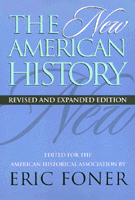

<body bgcolor="#FFFFFF" text="#000000" link="#0000FF" vlink="#CC0000" alink="#CC0000"><center><hr width="350" size="1" align="center" noshade>Leading historians define key trends in the field of history and reflect on how the experience of previously neglected groups has fundamentally redefined U.S. history<hr width="350" size="1" align="center" noshade><p><a href="https://cdcshoppingcart.uchicago.edu/Cart/ChicagoBook.aspx?ISBN=9781566395519&&PRESS=temple" target="_top">Buy this book!</a> | <a href="https://cdcshoppingcart.uchicago.edu/Cart/Cart.aspx?PRESS=temple" target="_top">View Cart</a> | <a href="https://cdcshoppingcart.uchicago.edu/Cart/Cart.aspx?PRESS=temple" target="_top">Check Out</a></p><p></p></center><!--none//--><h1>The New American History</h1>
<H2>Revised and Expanded Edition</H2>
<H2>Edited for the American Historical Association</H2>
<h3>edited by Eric Foner</h3>
<P>cloth 1-56639-551-8 $77.50, Jun 97, <FONT COLOR=#990033>Out of Stock Unavailable</FONT>
<br>paper 1-56639-552-6 $36.95, Jun 97, <FONT COLOR=#990033>Available</FONT>
<br>Electronic Book 1-43990-729-3 $36.95 <FONT COLOR=#990033>Out of Stock Unavailable</FONT>
<BR> 400 pp
6x9
3&nbsp;tables
</P><p>Originally released in 1990, <i>The New American History, </i>edited for the American Historical Association by Eric Foner, has become an indispensable volume for teachers and students. In essays that chart the shifts in interpretation within their fields, some of our most prominent American historians survey the key works and themes in the scholarship of the last three decades. Along with substantially revised essays from the first edition, this volume presents three entirely new ones -- on intellectual history, the history of the West, and the histories of the family and sexuality. The second edition of <i>The New American History </i>reflects, in Foner's words, "the continuing vitality and creativity of the study of the past, how traditional fields are being expanded and redefined even as new ones are created."
<BR>&nbsp;<h2>Excerpt</h2><P>Excerpt available at <a href="http://www.temple.edu/tempress">www.temple.edu/tempress</a></p>
<BR>&nbsp;<h2>Contents</h2><P>
<p>Preface to the Revised and Expanded Edition &#150 Eric Foner
<br>Introduction to the First Edition &#150 Eric Foner
<p><b>Part I: Eras of the American Past</b>
<br>1. Beneficiaries of Catastrophe: The English Colonies in America &#150 John M. Murin
<br>2. The Revolutionary Generation: Ideology, Politics, and Culture in the Early Republic &#150 Linda K. Kerber
<br>3. Society, Politics, and the Market Revolution, 1815-1848 &#150 Sean Wilentz
<br>4. Slavery, the Civil War, and Reconstruction &#150 Eric Foner
<br>5. Public Life in Industrial America, 1877-1917 &#150 Richard L. McCormick
<br>6. Prosperity, Depression, and War, 1920-1945 &#150 Alan Brinkley
<br>7. America since 1945 &#150 William H. Chafe
<p><b>Part II: Major Themes in American Experience</b>
<br>8. Intellectual and Cultural History &#150 Thomas Bender
<br>9. Western History &#150 Richard White
<br>10. Social History &#150 Alice Kessler-Harris
<br>11. U.S. Women's History &#150 Linda Gordon
<br>12. The History of the Family and the History of Sexuality &#150 Estelle B. Freedman
<br>13. African-American History &#150 Thomas C. Holt
<br>14. American Labor History &#150 Leon Fink
<br>15. Ethnicity and Immigration &#150 Thomas B. Shenton and Kevin Kenny
<br>16. Liberty and Power: U.S. Diplomatic History, 1750-1945 &#150 Walter LaFeber
<p>About the Contributors
</P><BR>&nbsp;<H2>About the Author(s)</H2>
<table><tr><td valign="top"><img src="/tempress/authors/1367_au.gif" height="90" width="75"></td><td width="100%" valign="middle"><p><B>Eric Foner</B> is DeWitt Clinton Professor of History at Columbia University. He is the author of numerous books, including <i>Reconstruction, 1863-1877, </i>which was awarded the Bancroft Prize.</P></td></tr></table>
<BR><H2>Subject Categories</H2>
<p><A HREF="/tempress/history.html" TARGET="_top">History</a>
</p>
<BR><h2 class="inpageheading">In the series</H2>
<P><I><a href="http://www.temple.edu/tempress/critical.html" onMouseOver="window.status='Click for other books in this series!'; return true;" onMouseOut="window.status=''; return true;" target="_top">Critical Perspectives on the Past</a></i>, edited by <a href="http://www.temple.edu/tempress/authors/benson_memoriam.html" target="_top">Susan Porter Benson</a>, Stephen Brier, and Roy Rosenzweig.
</p><p><i>Critical Perspectives on the Past</i>, edited by Susan Porter Benson, Stephen Brier, and Roy Rosenzweig, is concerned with the traditional and nontraditional ways in which historical ideas are formed. In its attentiveness to issues of race, class, and gender and to the role of human agency in shaping events, the series is as critical of traditional historical method as content. Emphasizing that history is itself an interpretation of material events, the series demonstrates that the historian's choices of subject, narrative technique, and documentation are politically as well as intellectually constructed.</p>
<p align="center"><a href="https://cdcshoppingcart.uchicago.edu/Cart/ChicagoBook.aspx?ISBN=9781566395519&&PRESS=temple" target="_top">Buy this book!</a> | <a href="https://cdcshoppingcart.uchicago.edu/Cart/Cart.aspx?PRESS=temple" target="_top">View Cart</a> | <a href="https://cdcshoppingcart.uchicago.edu/Cart/Cart.aspx?PRESS=temple" target="_top">Check Out</a></p><p><font face="Arial" size="1"><a href="copyright.html" onMouseOver="window.status='Web Copyright Policy';return true;" onMouseOut="window.status=''" title="Web Copyright Policy">&copy;</a> 2015 <a href="http://www.temple.edu" target="new" onMouseOver="window.status='Link to Temple University home page';return true;" onMouseOut="window.status=''" title="Link to Temple University home page">Temple University</a>. All Rights Reserved. http://www.temple.edu/tempress/titles/1367_reg.html</font></p>